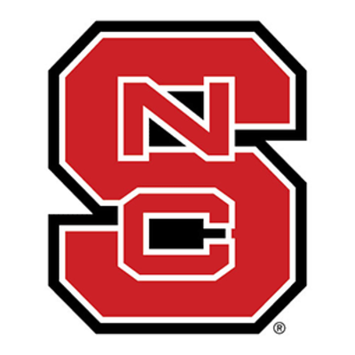
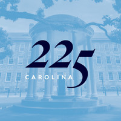

Experience
Graduate Research Assistant
North Carolina State University
Aug 2016 - Present
Raleigh-Durham, North Carolina Area
Senior Fellow
The Medical Innovators Collaborative (MEDIC)
July 2017 - Oct 2017
Research Triangle Park, NC
Education
Washington and Lee University
Bachelor of Science - Chemistry, Engineering
2012 - 2016
Racket Sports Club; Gifted Hands: American Sign Language; Gentleman's League; Beta Beta Beta; Biological Honor Society; Upper Division Resident Advisors
North Carolina State University
Doctor of Philosophy - PhD, Biomedical/Medical Engineering
2016 - 2021
University of North Carolina at Chapel Hill
Doctor of Philosophy - PhD, Biomedical/Medical Engineering
Raquetball